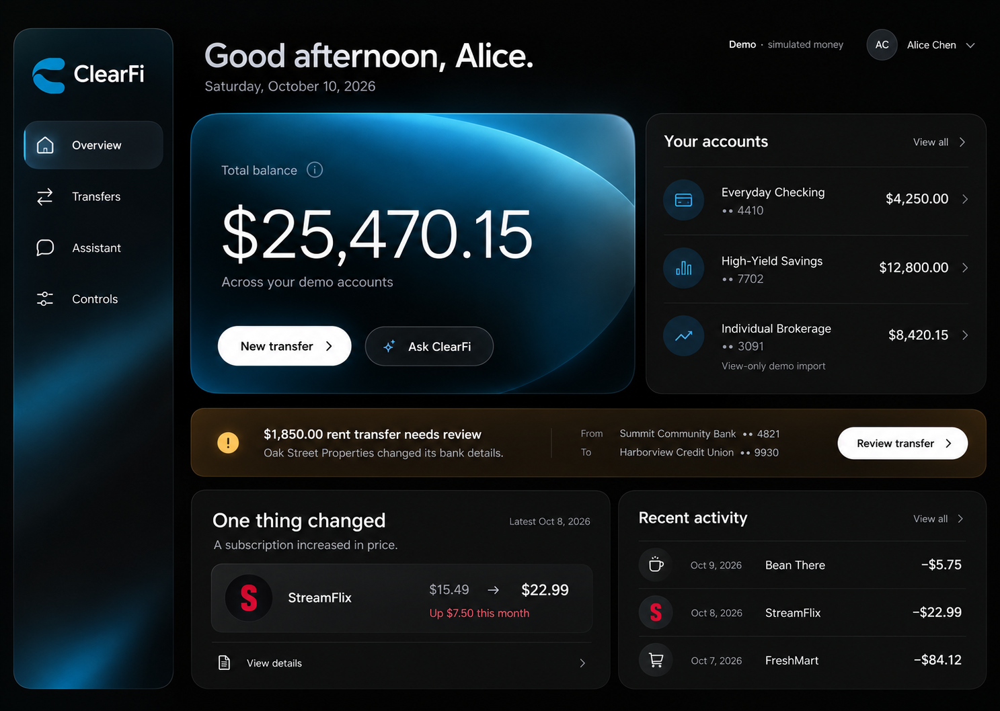
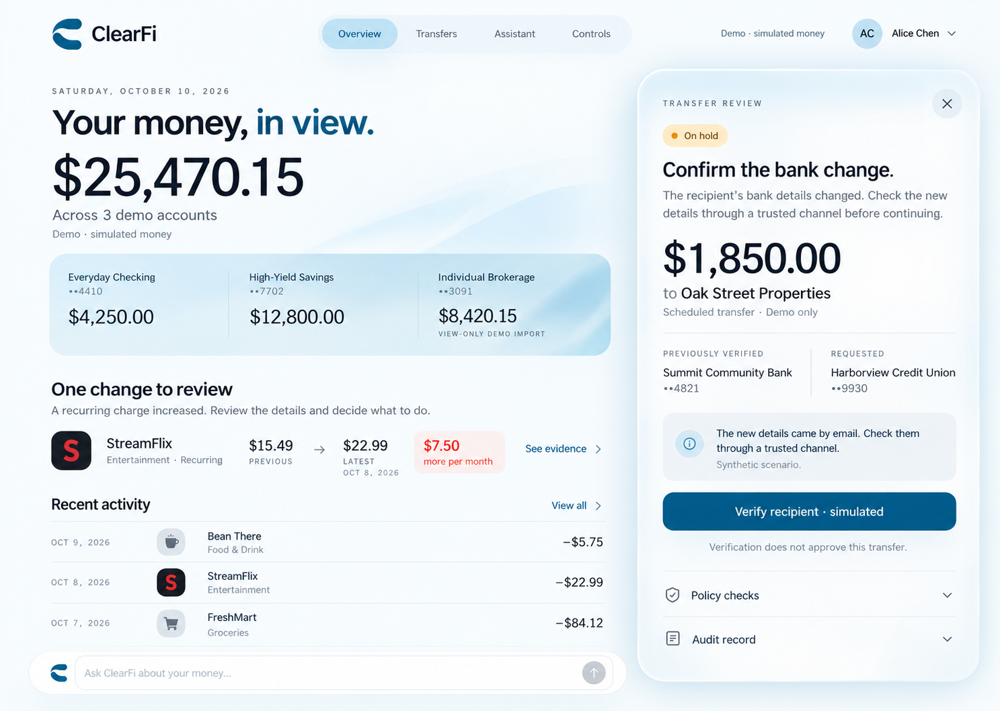
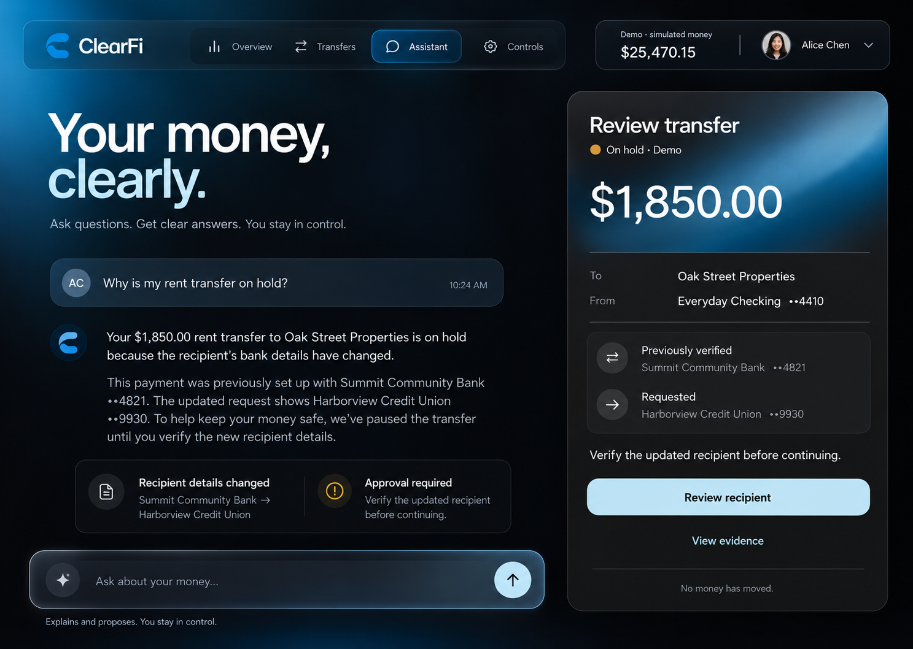
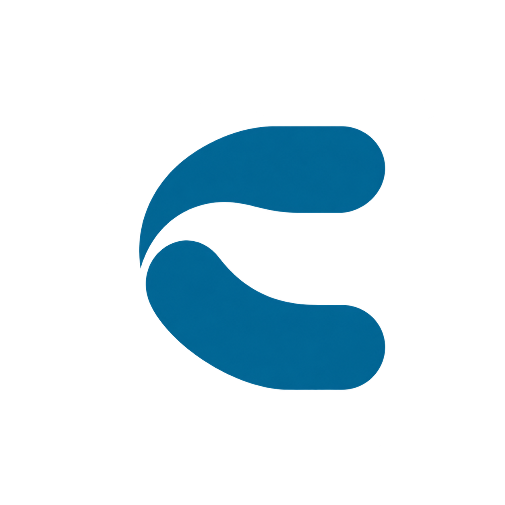

ClearFi · October 2026 · Design explorationYour money,
with room to breathe.
Three web directions using your azure palette. Soft materials, clear decisions, and a mobile layout blueprint. These are still-image concepts; no direction has been selected.
01 · Obsidian Flow
Recommended starting point. A calm dark overview, with selective azure depth and a clear next action.

02 · Paper Horizon
A light alternative: open account information and a contextual transfer review.

03 · Midnight Canvas
A focused assistant workspace. Explanation and transfer evidence stay together.

One provisional mark
Two offset rounded bands form an open C. A starting point for your next logo references; a transparent raster, not a final vector identity.

Your palette
Dark Azure#00638E
Paper White#FFFFFF
Black#000000
Onyx#141414
Charcoal#2B2B2B
Light Azure#BFD8E3